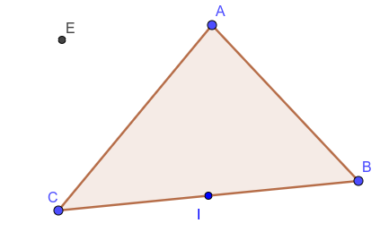

Soient $ABC$ un triangle et $I$ le milieu de $[BC]$ .
On considère la translation $t$ qui transforme $B$ en $I$ .
$1)\;$Construire $E\,$ l'image de $A$ par la translation $t$ .
$2)\;$Soit le point $F$ tel que : $\;2\vect{BF} - 3\vect{BC} = \vect{0}$
$\quad $ Montrer que $F$ est l'image de $C$ pare la translation $t$
$3)\;$En déduire que les droites $(EF)$ et $(AC)$ sont parallèles .
$1)\;$La construction :

$2)\;$On a : $$ \begin{aligned} 2\vect{BF} - 3\vect{BC} = \vect{0} &\so 2\pr{\vect{BC}+\vect{CF}} - 3\vect{BC} = \vect{0} \\ &\so 2\vect{BC}+2\vect{CF} - 3\vect{BC} = \vect{0} \\ &\so 2\vect{CF} - \vect{BC} = \vect{0} \\ &\so 2\vect{CF} = \vect{BC} \\ &\so 2\vect{CF} = 2\vect{BI} \\ \end{aligned} $$ Donc $F$ est l'image de $C$ pare la translation $t$
$3)\; E$ et $F$ sont les images respectives de $A$ et $C$ par la translation $t$
Alors $(EF)$ est l'image de $(AC)$ par la translation $t$ .
D'où : $(EF)$ et $(AC)$ Sont parallèles .